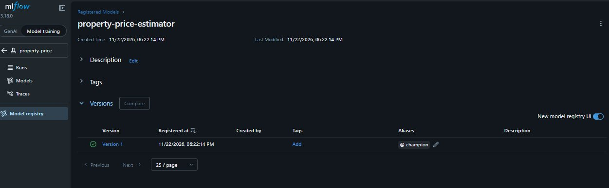
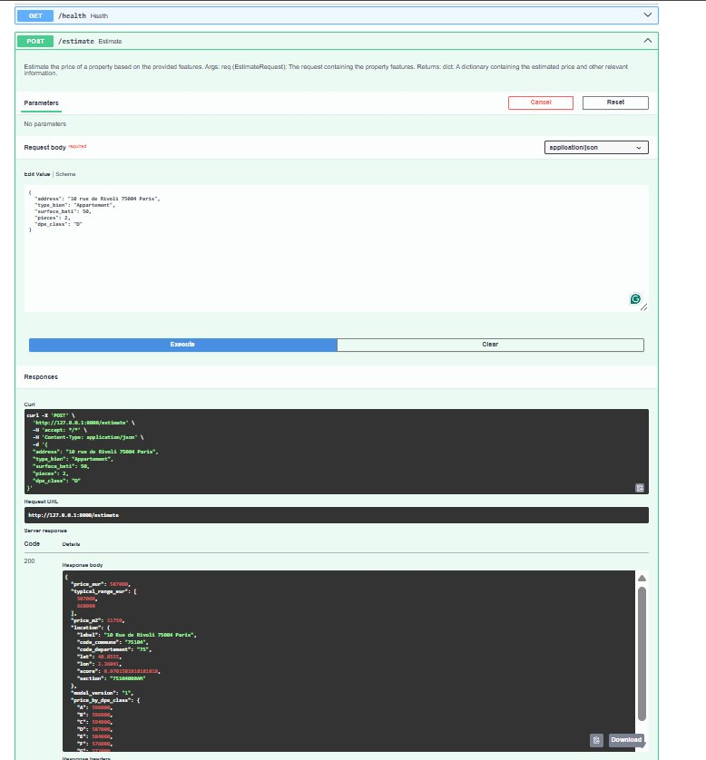
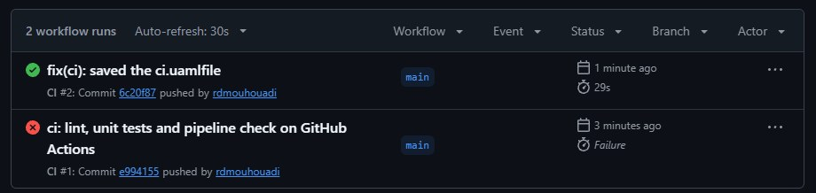
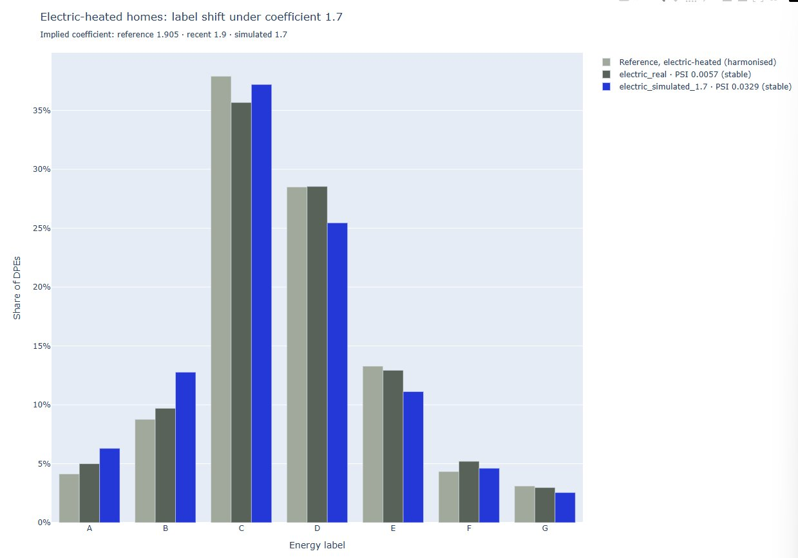
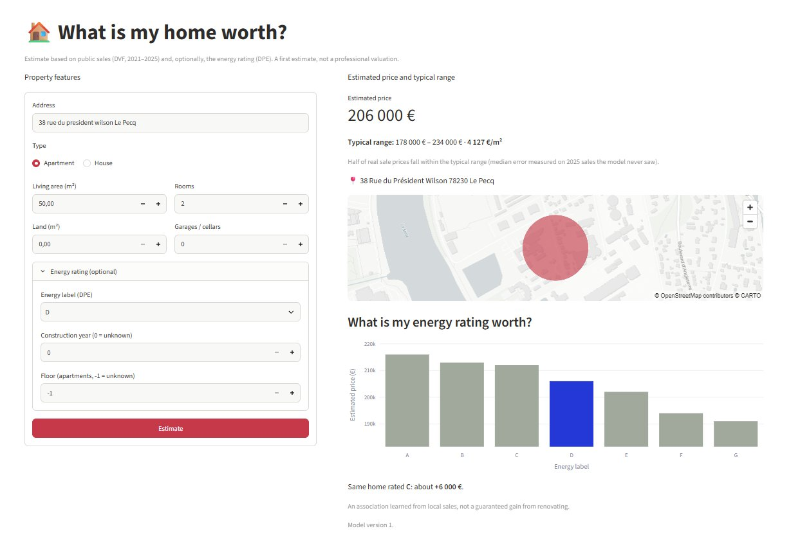

Catching a rule change before it breaks the model
New to me: DVC and MLflow in practice, after a course on the theory · First estimate served: same afternoon · Whole build: one weekend, model on day 1, MLOps on day 2
France changes how the energy rating is calculated on 1 January 2027, and the price model from part 1 would quietly go stale. I turned it into a pipeline that can rebuild itself, served it through an API and an app, and built a monitor for that change. The standard test on label distributions missed a simulated version of it. A detector that watches the rule itself caught it on the first new ratings, and triggered a retrain on its own.
- Pipeline
- DVC + MLflow, one command
- Serving
- FastAPI + Streamlit
- Monitor
- Implied coefficient + PSI
- Outcome
- Change caught, −10.8% vs ±3% alert
Context
In part 1, I joined 4.2 million French property sales with 15.7 million energy ratings (DPE) and trained a model that estimates a sale price. On 2025 sales, half of its estimates fall within 16% of the real price.
The energy label is one of its inputs, and the label’s rules keep moving. For homes heated by electricity, the calculation converts final energy into primary energy with a coefficient. It went from 2.3 to 1.9 on 1 January 2026 [1], and drops to 1.7 on 1 January 2027 [2]. A home can move up a label with no work done. The model was trained on labels computed at 1.9. From 2027, users will enter labels computed at 1.7.
Part 1 was a set of scripts run by hand, in an order only I knew. That doesn’t survive a rule change.
Problem
I wanted the estimator to be usable by anyone, and to notice the 2027 change by itself. That needs four things: a pipeline that can rebuild the model from raw data, a record of which model is in use, a way for people to get an estimate from an address, and a monitor that raises an alert when the rule changes.
Question: can a monitor detect a change in the rating rules from incoming ratings alone, early enough to retrain before the old model gives wrong answers?
Methodology
A pipeline that can rebuild itself
DVC [3] wraps the existing scripts as stages: download, extract, clean, join, features, train, test. Each stage declares its code, its input files and the settings it reads. Every setting lives in one file, params.yaml, including the electricity coefficient. Change one value and dvc repro reruns exactly the stages that depend on it, and nothing else. Outputs that already existed were registered without being recomputed.
MLflow [4] records every training run: settings, validation and test scores, and the model file. Each run registers a new model version, and an alias, champion, marks the one in use. A new version becomes champion only if its test error beats the current champion’s. The roles are separate: DVC knows how a model is produced, MLflow knows what each run gave and which one is live.

From an address to an estimate
The model needs 21 features. A user knows an address, a surface and a few details. FastAPI [5] fills the gap. IGN’s geocoding service turns the address into a commune and coordinates [6]. The cadastre service gives the parcel, whose ID contains the cadastral section [7]. A table rebuilt by the pipeline gives the latest local prices, with the same smoothing as in training. The API returns the estimate, a typical range (plus or minus the test median error for that property type) and the price the same home would fetch with each label from A to G. The Streamlit app is only a client of that API. In line with the sales data’s terms, it shows no individual sale and asks search engines not to index it.

A monitor, tested before being trusted
The usual check compares the distribution of a variable today with a reference, here with the Population Stability Index (PSI) [8]. Before relying on it, I tested it against the change it was meant to catch. I took the ratings issued in the last six months and recalculated the electric-heated ones at 1.7 with the 2021 label thresholds. Then I ran two kinds of checks. Real checks run on actual recent ratings and must stay stable: that shows the training labels are consistent. Simulated checks run on the recalculated ratings and must fire: that shows the monitor can see the change.
A second detector watches the rule itself. For homes heated by electricity, primary energy is final energy times the coefficient, so the median ratio between the two, over recent ratings, gives the coefficient in use. I call it the implied coefficient. Today it should read 1.9. An alert fires if it moves by more than 3%.
From alert to retrained model
The label thresholds and the recalculation live in one module, shared by the features and the monitor, so both apply the same rule. When the implied coefficient drifts, a trigger script writes the new value into params.yaml and runs the pipeline: labels are recalculated, the model is retrained and tested, and the gate decides. Nothing is committed automatically. A person reviews the change to params.yaml and the pipeline lock file, and commits.
Checks on every push
GitHub Actions installs the exact locked environment, lints the code (ruff), runs the tests (pytest) and checks that the pipeline definition is valid. CI has no data and no model, so the label rules are tested on a tiny in-memory table: an electric home at 190 kWh/m² becomes 170 at the new coefficient, and moves from D to C. The API test mocks the geocoder and is skipped when no model is present.

Results
The standard monitor was blind
| Detector | Real recent | Simulated 1.7 | Alert at | Sees it? |
|---|---|---|---|---|
| Label PSI, all ratings | 0.017 | 0.028 | 0.1 | No |
| Label PSI, electric-heated only | 0.006 | 0.033 | 0.1 | No |
| Implied coefficient | 1.900 | 1.70 | ±3% | Yes |
The real checks stayed stable, so the training labels follow one rule. But the label PSI stayed far below its alert level on the simulated change, even when restricted to electric-heated homes, where A-rated homes went from 4.1% to 6.3% and B-rated from 8.8% to 12.8%. The change is diluted twice: most homes don’t heat with electricity, and among those that do, only homes near a threshold change label. The implied coefficient moved from 1.905 to 1.70, a 10.75% drop against a 3% alert level. It reacts to the first ratings issued under a new rule, before any distribution moves.

The loop ran by itself, and exposed a weak gate
Run in simulation mode, the trigger read the alert, wrote 1.7 into params.yaml and started the pipeline. Labels were recalculated, the model retrained (2,966 trees) and tested, and version 2 was registered.
| Model | Labels at | Median error | Within 20% | Gate |
|---|---|---|---|---|
| v1 (champion) | 1.9 | 15.96% | 59.5% | – |
| v2 (challenger) | 1.7 | 15.94% | 59.6% | promoted |
The gate promoted v2, but for a bad reason. A difference of 0.02 points is noise. Worse, the two scores were measured on different inputs: v2 on labels at 1.7, v1 on labels at 1.9. A fair gate scores both models on the same current data and requires a margin. After a rule change, “not worse” should be enough, because the old model no longer matches the labels users enter. I reverted the demo and put the fix on the roadmap.
What the app shows

| Address | Estimate | Per m² | Label G → A |
|---|---|---|---|
| Rue de Rivoli, Paris 4e | €587,000 | €11,750 | +4% |
| Le Pecq, Yvelines | €206,000 | €4,127 | +13% |
The label is worth three times more, in relative terms, outside central Paris. Where location sets most of the price, the label barely moves it. This is an association learned from local sales, not a promise about renovating.
Takeaway
The interesting part of the MLOps work wasn’t the tools. It was finding out that the monitor I would have shipped by default couldn’t see the one change it was built for. Two lessons I’ll reuse: test every monitor against a simulated version of the drift before trusting it, and when you know what can change, watch the cause, not only its effects.
Limitations
- On simulated data, the implied coefficient moves partly by construction. The honest test is the real change of January 2026, from 2.3 to 1.9: the monthly implied coefficient should step down from about 2.3 to about 1.9. That backtest hasn’t been run yet; it is first on the list below.
- The recalculation is approximate: 2021 thresholds, no small-surface rule, and homes with several energy sources scaled on their total.
- The promotion gate compares scores from different inputs, with no margin (see above).
- The range shown is a typical error, not a calibrated interval: about half of real prices fall outside it.
- Serving depends on two IGN services. When they are down, the API returns an error rather than a guess.
- The drift check runs on demand. It isn’t scheduled yet.
Next
The real-event backtest, a fairer gate, a weekly schedule, then Docker and infrastructure as code. Further out: a value-over-time view, with 10-year curves under explicit scenarios (local development from building permits and zoning, market downturn, energy-label rental bans, renovation).
References
- Ministère de l’Économie, 2025. Un nouveau DPE au 1er janvier 2026 pour favoriser le chauffage électrique. economie.gouv.fr.
- Ministère de la Transition écologique, 2026. DPE et audits énergétiques : publication de l’arrêté abaissant le facteur de conversion de l’électricité à 1,7 au 1er janvier 2027. ecologie.gouv.fr.
- DVC documentation: data pipelines and parameters. dvc.org/doc.
- MLflow documentation: tracking and model registry. mlflow.org/docs.
- FastAPI documentation. fastapi.tiangolo.com.
- IGN. Géoplateforme geocoding service. geoservices.ign.fr.
- IGN. API Carto, cadastre module. apicarto.ign.fr.
- Siddiqi, N., 2006. Credit Risk Scorecards: Developing and Implementing Intelligent Credit Scoring. Wiley.
- Huyen, C., 2022. Designing Machine Learning Systems. O’Reilly, chapter 8: data distribution shifts and monitoring.
- Rabanser, S., Günnemann, S. and Lipton, Z., 2019. Failing loudly: an empirical study of methods for detecting dataset shift. Advances in Neural Information Processing Systems, 32.